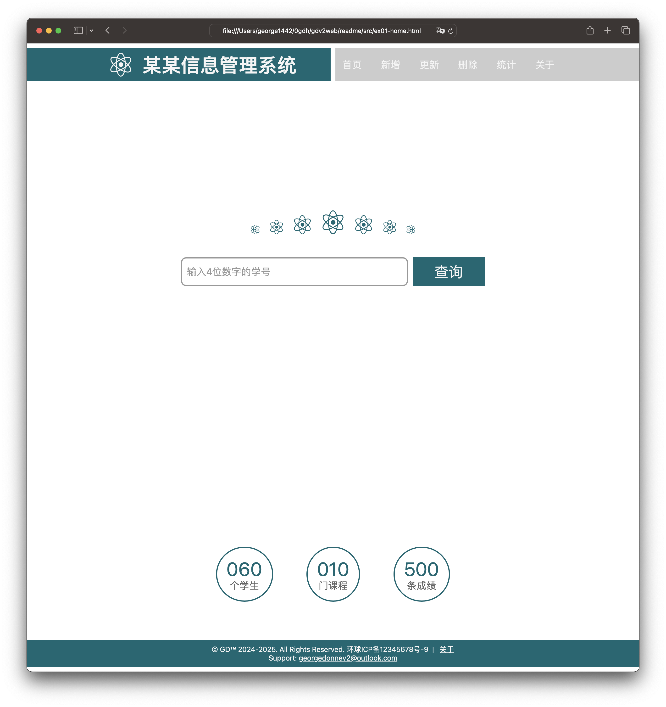
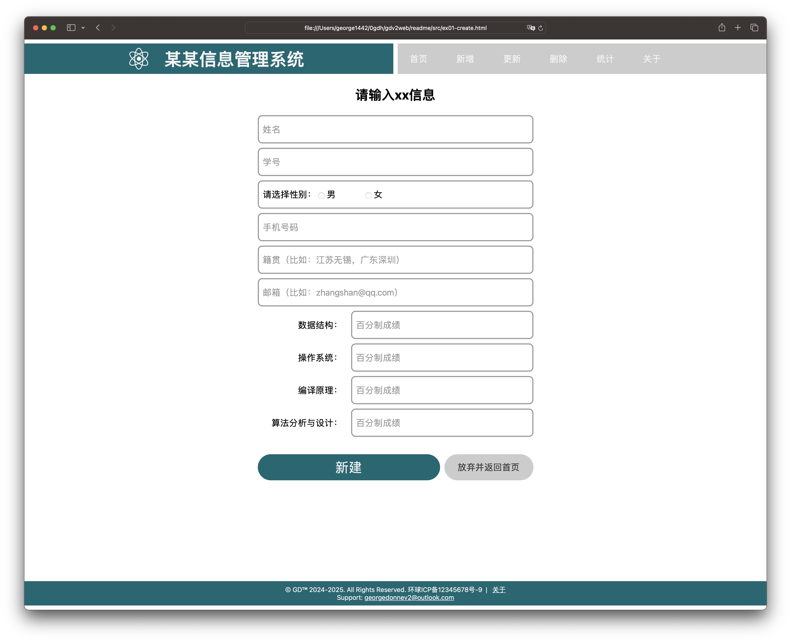
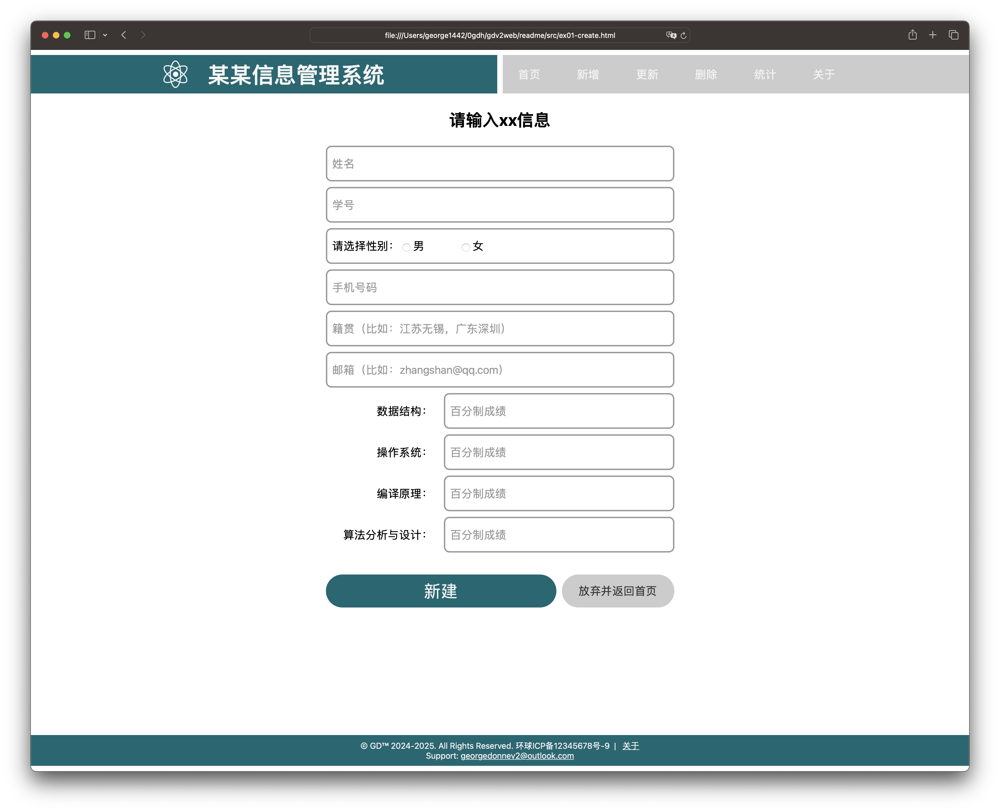

前言
本文描述了用于某某信息管理系统的几个主要界面的编写过程和样例，仅供感兴趣读者参考。用于《某某信息管理系统的Web界面开发指南》（以下简称《Web界面开发指南》），请访问链接获取更多信息。界面样例如何和后台结合起来，请参考《Web界面开发指南》之“编写Web后台服务器处理函数”。
以下是部分主要界面的样例。从左到右、从上到下依次为：主界面（查询）、记录详情界面--1个、记录详情界面--多个、新增记录界面。更新记录界面和新增记录类似，相关信息填入从数据库中查询得到的信息即可。
 

本文后续章节讲解界面样例的编写过程。
主要参考资料
- 文档与网站架构，MDN
- CSS3 选择器——基本选择器，fedev.cn
- 聊聊input元素，fedev.cn
- 2022年不能再错过 CSS 网格布局了，fedev.cn